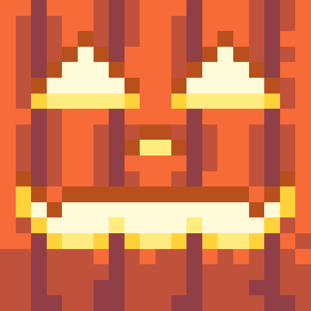

Mods Carves & Crafts

Carves & Crafts
Intaglio di zucche per Fabric 1.21.11. Gratis e open source.
Presto scaricabile suModrinth
| Canale | Nome | Versione del gioco | Piattaforma | Pubblicata | Download |
|---|